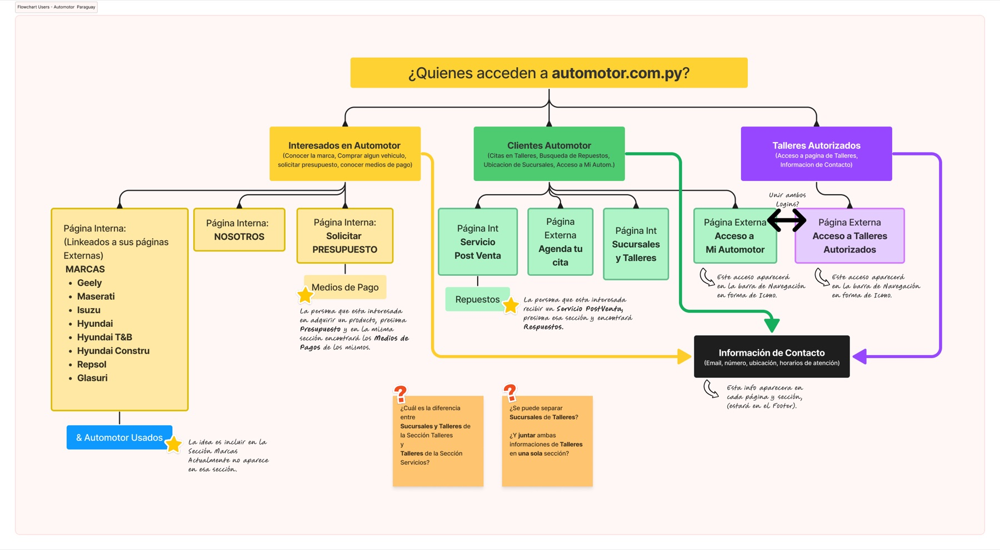

Nine vehicle brands, three audiences, and a site built for none of them.
Automotor is a multi-brand vehicle group in Paraguay. The brief was to redesign its website. The real problem was that nine brands and three completely different kinds of visitor were sharing one homepage, organized around how the company is structured internally.

What I inherited
A full-screen brand carousel, one brand per slide, with no visible menu. There was no route to booking a service and no way to find a branch. The site described the company, but it didn’t help anyone who had come to do something.
The question that reorganized the site
I started with one question: who actually arrives at automotor.com.py, and what did they come to do? I mapped every group that lands on the domain. Three came out with almost nothing in common.
| Who arrives | What they came to do | The route I built |
|---|---|---|
| Buyers | Shop across nine brands, compare models, find offers, book a test drive | “¡Quiero el mío!” |
| Owners | Already bought. They need a service appointment or a part, a branch, opening hours | “Soy cliente” · Mi Automotor |
| Authorized workshops | Independent businesses with their own login, who reach their account without being treated as customers | “Talleres Autorizados” |

Two questions back to the client
The mapping surfaced two questions the brief had never answered. Were “branches” and “workshops” genuinely different things to a visitor, or just different departments internally? And should the two logins be merged? I sent both back to the client before designing a single screen, because either answer would change the navigation.
The decision I’d defend
I named the navigation by intent, not by department, and kept the two logins separate. Merging them would have looked tidier, but it would have forced every visitor to identify themselves before the site could help them.
Design, then build, then launch
Wireframes, user flows and the UI came first, in Figma. Then I built the site and launched it myself in Framer rather than handing it off. I’d learned to do that the year before, when a developer dropped out the day before another client’s launch and I rebuilt months of design work in 24 hours. I haven’t handed off a build since.
The branch page system is one template behind 21 pages across four cities. Each page holds three sets of opening hours (showroom, parts and workshop), and the system is built so a marketing team with no developer can maintain it.
What changed
Booking a service and finding a branch went from impossible to first-class tasks, each with its own route. I still publish their promotions and keep the vehicle range current, and the group has since given me three more of its companies: Carmotor, Empedril and BOGA.
[Outcome numbers from Grupo BOGA: service bookings, calls or traffic to Servicios, before and after]
[Testimonial from Grupo BOGA, with name and title]